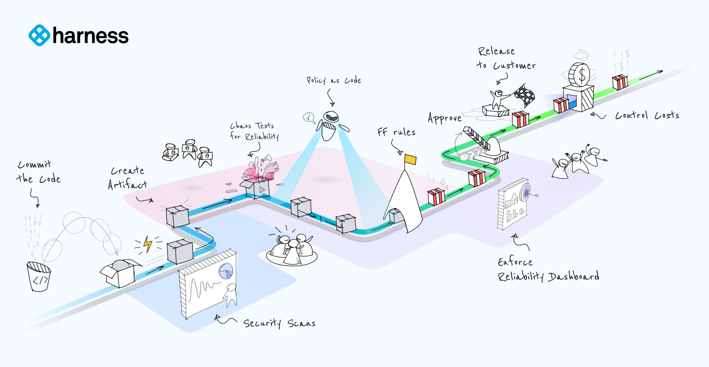
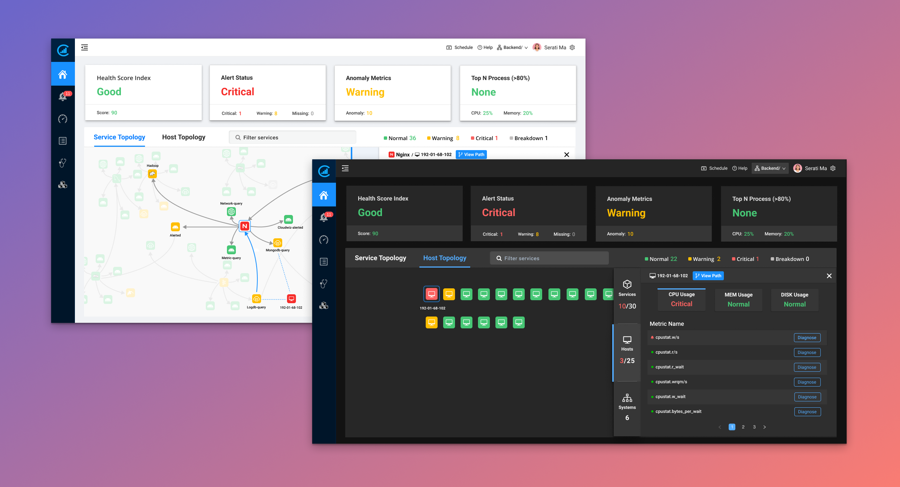

Hi, I'm Yi.
I design AI agents and the systems that make them trustworthy. My background spans enterprise SaaS UX at ServiceNow and Harness — growth, dashboards, agentic workflows — but my current focus is agent design end-to-end: the behavior layers, value constitutions, and escalation logic that govern how agents act, and the interfaces that make human-AI collaboration visible and controllable. Want to know more about the person behind the work? Visit my About Me page →

Designing
a Lead Intelligence Agent from the Inside Out
Proved that values, not interfaces, determine AI agent behavior by building a lead agent with a value constitution, trust state machine, and human-AI collaboration architecture.

Designing
Partner Quality as Decision Support System
Reframed partner quality from a reporting problem into a decision-support system, helping stakeholders move from visibility to action through risk detection and guided interventions.

Orchestrating
User Growth in the Harness PLG Journey
Leveraging a service-oriented mindset to drive product-led growth (PLG) and establish sustained growth for the DevOps Platform.

Building
Cloudwiz Dashboard 2.0
Launching and evolving Cloudwiz's Application Performance Monitoring platform dashboard with full-stack observability.

Transforming
Troubleshooting Workflow with AI
Exploring a new way to simplify troubleshooting processes among mountains of data and creating AI-based solution recommendations.